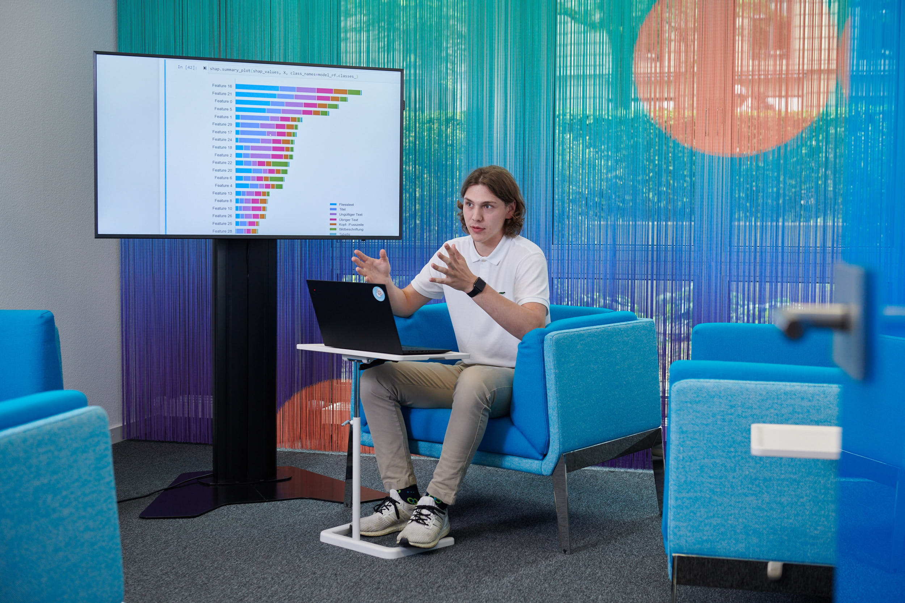

"
/>
I am a 22-year-old Data Scientist and current data science student at FHNW, based in Bern, Switzerland. My passion lies in applying cutting-edge machine learning techniques and transforming raw information into clear, insightful visualizations—especially when it comes to mapping the world in meaningful, interactive ways. Here, you’ll find my latest projects, experiments, and ideas as I continue exploring the exciting frontier of data-driven innovation.

By combining robust data science methods with cartographic principles, I transform complex geospatial data into intuitive, interactive visual stories.

I believe in the power of machine learning to uncover meaningful patterns hidden in today’s data-rich environment. Drawing on advanced algorithms, I develop predictive models that help anticipate trends, optimize processes, and inform strategic decisions

Behind every dataset lies a narrative waiting to be uncovered. By combining analytical insights with engaging visuals, I craft coherent, human-centered stories that make data both approachable and enlightening
Want to talk and work together?
Write me an e-mail: nils.walker@students.fhnw.ch